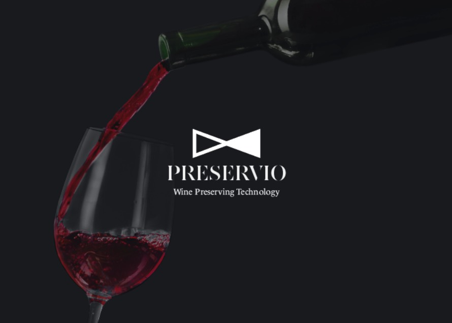
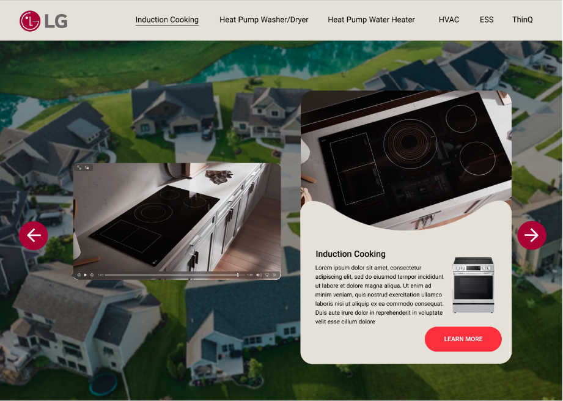

Role: Lead Brand Designer
Company: Preservio - A Yale-founded wine preserver start-up



Formerly named Shinnkuu (meaning "vacuum" in Japanese), the founders wanted a full rebranding
and onboarded me to create an identity that evoked elegance and could be both modern and timeless, like a bottle of fine wine.
When designing the first iteration of the new logo, I took heavy inspiration from the sleek design of the product itself.
Using the design of the cap, I was able to create a flower symbol that could evoke freshness and preservation.
For the name, I researched several wine bottles and was able to select a serif typeface that gave the design a classic look that could balance
the more modern design of the product.

The final logo, however, became a combination of the old logo mark and new name - borrowing the geometric infinity symbol from the
old branding with the new name. Above are 2 iterations of the new product packaging design utilizing the new identity.
A proposed design for the inside of the packaging that would provide a pop of color contrasting the dark exterior.
Role: CAC Marketing/Graphic Design Intern
Company: LG Electronics (Air Solutions Division)
Company: LG Electronics (Air Solutions Division)
My internship onboarding ocurred during LG's major global rebranding, and I was tasked to help the ACT division transition to the new visual identity.
One of the projects I undertook was developing a prototype for a new landing page as part of the whole-home electrification campaign that could
help centralize information and resources for major product categories.

A side-by-side view of the desktop and mobile layout.

A side-by-side view of the desktop and mobile layout.
A side-by-side view of the desktop and mobile layout.


Multiple variations of new LinkedIn banners for employees were created using the new global Brand kit.

Employees across offices were using inconsistent email signatures, so I designed and proposed
a new standardized version to promote brand consistency in communication.

I was tasked by the North American HR office to design new logo concepts for the internal Onboarding Navigator program.
Each logo was built with a "kit-of-parts" designed to symbolize a specific characteristic of the program as seen on the bottom.
When designing my kit-of-parts, I made sure to use the new brand colors and typeface.

Additional logo concepts designed for the Onboarding Navigator program.

I was also tasked to redesign the "Friendcentive" program logo. On the right is the older logo which was deemed outdated by the new visual identity.
On the left was the proposed concept for the new logo which follows the new branding but also takes a more minimal and modern approach.


I developed and executed multiple office-wide events as part of a summer series in team-bonding.
Above are flyers I designed to promote the events throughout the whole office.


More flyer designs used to promote the office events.


I worked closely with the social media specialist to design new digital marketing collateral that
could be used to advertise LG's HVAC products while following the new visual identity.
Above are the final variations of background templates to be used for posting product highlights.

I was able to output over 300 assets using the templates I created.
Every template, including the ones in the following slides, were redesigned in Canva to be easily adapted and used by anyone in the marketing team.

Above are general templates created that could be used for organic posts, announcements, product highlights, etc.
The circle shaped placeholders are made easily replaceable by photographs related to the post.

Above are variations of templates designed for speaker and event/conference content,
with each of the circles being replaced with an image of the speaker(s).


Above are concepts for paid marketing assets designed to combine lifestyle photography with products
while following the new branding. I was also able to design templates for partnership announcements.

Above are templates to be used as announcement for LG's Mobile Showroom tour dates as well as LG's HVAC podcast announcement posts.
Role: Creative Design Lead
Company: The Southeast Asia Exchange - A student-led educational nonprofit organization
Company: The Southeast Asia Exchange - A student-led educational nonprofit organization
As a creative design lead, I collaborated with the founders to develop a visual style based on the theme of the cycle.
Above are examples of some of the graphics I designed for social media following the theme of "water" and "passages."
Above are examples of some of the graphics I created for the succeeding theme of "homeland" and "flora."
Role: Graphic Design Student/Club Designer
Company: Yale University
Company: Yale University
Designed and developed a unique brand identity concept for one of Yale's most elusive parties as part of my Advanced Graphic Design course.


Designed and developed an exhibition identity concept for the Yale University Art Gallery as part of my Graphic Design Methodologies course.
Above are flyer mockups inspired by the interaction of the theater actors whose portraits are displayed.


Above are postcard mockups (front and back) of the art works found in the Yale collection,
highlighting the faces of the actors in the headshot on the front of the postcard.


Another postcard prototype.

Above is a mockup of playing cards to be sold in the Yale University Art Gallery gift shop as part of the special exhibition,
inspired by the concept of play and interaction among the actors in the headshots.

Grid layout of social media posts to advertise the special exhibition.
I was part of a small team to help redesign the Japanese Program's website in order to make it follow
the university's brand standards and to ensure important resources were accessible to current and prospective students.
I also designed the program's mascot and graphics as seen in the last page of the website.
As the publicity chair of the Women and Gender Minorities in Computer Science (WG/CS) club,
I led a full redsign of the club's visual identity including its new website.
Depicted on the left is the old club logo when it was formerly known as "Float."
On the right is the new logo I designed- incorporating overlapping circular shapes
as a motif to community, bonding, and the core teams of Professional, Scholastic, Social, and Publicity.
The butterfly symbol formed in the center is an homage to the old club name,
but also encapsulates girlhood, transformation, and resiliance. The "i" was replaced by a forward slash /
representative of looking forward which is often used in code and can also be seen
around the text below the logo.
Above are all the different logo variations I had designed and proposed to the board.
I also designed new club merch using the new club identity.